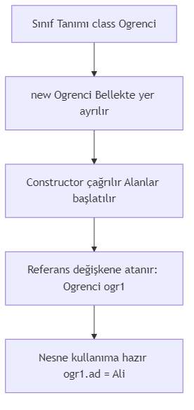

Java’nin Temelleri
2026
---
title: "Sınıf, Nesne, Constructor ve Kapsülleme"
subtitle: "Java'da Nesne Yönelimli Programlamanın Temelleri"
author: "Teknik Kitap Yazarı"
date: 2024-01-15
lang: tr
subject: "Java Programlama"
keywords: [Java, OOP, sınıf, nesne, constructor, kapsülleme, getter, setter, erişim belirteci]
abstract: |
Bu bölümde, Java'da nesne yönelimli programlamanın (OOP) temel yapı taşları olan sınıf ve nesne kavramlarını, constructor (yapıcı metot) çeşitlerini, this anahtar kelimesini, erişim belirteçlerini ve kapsülleme (encapsulation) prensibini öğreneceksiniz. Gerçek hayat örnekleri ve uygulamalı kod parçacıkları ile konuyu pekiştireceksiniz.
---Nesne Yönelimli Programlama (OOP), yazılım geliştirmede devrim yaratan bir paradigmadır. Java, OOP prensiplerini tam olarak destekleyen bir dildir. Bu bölümde OOP’nin dört temel prensibinden ikisi olan kapsülleme ve soyutlama üzerinde duracağız.
Bir yazılım projesi düşünün: bir okul kayıt sistemi. Öğrenciler, öğretmenler, dersler, notlar… Bunların her biri birer nesne olarak modellenebilir. Bir öğrencinin adı, soyadı, numarası, notları vardır. Bunlar özellikler (alanlar/fields). Ayrıca öğrenci ders alabilir, not girebilir, mezun olabilir. Bunlar da davranışlar (metotlar).
Pedagojik Not: Sınıf, bir “kalıp” veya “şablon” gibidir. Nesne ise bu kalıptan üretilen somut bir varlıktır. Örneğin, “İnsan” bir sınıftır; “Ali” ise bir nesnedir.
| Gerçek Hayat | Java’da Karşılığı |
|---|---|
| Araba tasarım çizimi | Sınıf (Class) |
| Üretilen her bir araba | Nesne (Object) |
| Arabanın rengi, modeli | Alan (Field) |
| Arabanın hızlanması, durması | Metot (Method) |
Bu bölüm boyunca, bu benzetmeleri kullanarak kavramları somutlaştıracağız.
Sınıf, bir nesnenin blueprint’idir (plan/tasarım). Java’da bir sınıf tanımlamak için class anahtar kelimesi kullanılır.
// Kodu çalıştırmak için: javac Ogrenci.java && java Ogrenci
public class Ogrenci {
// Alanlar (Fields) - Özellikler
String ad;
String soyad;
int numara;
// Metotlar (Methods) - Davranışlar
void bilgiGoster() {
System.out.println("Ad: " + ad + ", Soyad: " + soyad + ", No: " + numara);
}
}Yukarıdaki Ogrenci sınıfı, bir öğrencinin temel özelliklerini ve davranışlarını tanımlar. Ancak henüz bu sınıftan bir nesne oluşturmadık.
Önemli: Sınıf tek başına çalıştırılabilir bir program değildir.
mainmetodu içermez. Nesne oluşturmak için başka bir sınıfta (veya aynı sınıfta)mainmetodu kullanılır.
Bir sınıftan nesne (örnek/instance) oluşturmak için new anahtar kelimesi kullanılır.
new operatörü, bellekte (heap) yeni bir nesne için yer ayırır ve constructor’ı çağırarak nesneyi başlatır.
Ogrenci ogr1 = new Ogrenci();Burada:
- Ogrenci : Referans tipi (sınıf adı)
- ogr1 : Referans değişkeni (nesneyi işaret eder)
- new Ogrenci() : Yeni bir Ogrenci nesnesi oluşturur
Referans değişkeni, bellekteki nesnenin adresini tutar. Aslında nesnenin kendisi değil, ona erişim sağlayan bir “uzaktan kumanda” gibidir.
Ogrenci ogr1 = new Ogrenci(); // ogr1 bir referans
Ogrenci ogr2 = ogr1; // ogr2 de aynı nesneyi işaret eder
ogr1.ad = "Ahmet";
System.out.println(ogr2.ad); // "Ahmet" yazdırır (aynı nesne!)Nesnenin alanlarına ve metotlarına erişmek için nokta (.) operatörü kullanılır.
// Dosya adı: TestOgrenci.java
public class TestOgrenci {
public static void main(String[] args) {
Ogrenci ogr1 = new Ogrenci();
ogr1.ad = "Ayşe";
ogr1.soyad = "Yılmaz";
ogr1.numara = 1234;
ogr1.bilgiGoster(); // Çıktı: Ad: Ayşe, Soyad: Yılmaz, No: 1234
}
}Constructor, nesne oluşturulurken otomatik olarak çağrılan özel bir metottur. Adı sınıf adıyla aynı olmalıdır ve geri dönüş tipi olmaz (void bile değil!).
Constructor’ın temel görevi, nesneyi başlatmaktır (initialization). Genellikle alanlara ilk değerleri atamak için kullanılır.
Eğer bir sınıfta hiç constructor tanımlanmazsa, Java derleyicisi otomatik olarak parametresiz bir default constructor ekler. Bu constructor hiçbir işlem yapmaz (boş gövde).
// Dosya adı: Araba.java
public class Araba {
String marka;
int yil;
// Default constructor (derleyici tarafından eklenir)
// public Araba() { }
}Kendi constructor’ınızı tanımlayarak nesneyi oluştururken alanlara değer atayabilirsiniz.
// Dosya adı: Araba.java
public class Araba {
String marka;
int yil;
// Parametreli constructor
public Araba(String m, int y) {
marka = m;
yil = y;
}
}Pedagojik Uyarı: Kendi constructor’ınızı tanımladığınızda, default constructor otomatik olarak eklenmez. Eğer parametresiz constructor’a da ihtiyacınız varsa, onu da açıkça tanımlamalısınız.
Tıpkı metotlar gibi, constructor’lar da aşırı yüklenebilir. Farklı parametre listelerine sahip birden fazla constructor tanımlayabilirsiniz.
// Dosya adı: Araba.java
public class Araba {
String marka;
int yil;
String renk;
// Constructor 1: Parametresiz
public Araba() {
marka = "Bilinmiyor";
yil = 2024;
renk = "Beyaz";
}
// Constructor 2: İki parametreli
public Araba(String m, int y) {
marka = m;
yil = y;
renk = "Beyaz";
}
// Constructor 3: Üç parametreli
public Araba(String m, int y, String r) {
marka = m;
yil = y;
renk = r;
}
}this anahtar kelimesi, mevcut nesneyi (current object) referans eder. İki temel kullanımı vardır:
Parametre isimleri ile alan isimleri aynı olduğunda, alan isimleri gölgelenir. this kullanarak alanlara erişiriz.
// Dosya adı: Araba.java
public class Araba {
String marka;
int yil;
public Araba(String marka, int yil) {
// marka = marka; // HATA! Parametre kendine atanır, alan değişmez
this.marka = marka; // this.marka alanı, sağdaki parametreyi işaret eder
this.yil = yil;
}
}Bir constructor içinden, aynı sınıfın başka bir constructor’ını this(...) ile çağırabiliriz. Bu, kod tekrarını önler.
// Dosya adı: Araba.java
public class Araba {
String marka;
int yil;
String renk;
public Araba() {
this("Bilinmiyor", 2024, "Beyaz"); // 3 parametreli constructor'ı çağır
}
public Araba(String marka, int yil) {
this(marka, yil, "Beyaz"); // 3 parametreli constructor'ı çağır
}
public Araba(String marka, int yil, String renk) {
this.marka = marka;
this.yil = yil;
this.renk = renk;
}
}Önemli Kural:
this(...)çağrısı, constructor’ın ilk satırı olmalıdır. Aksi takdirde derleme hatası alırsınız.
Java’da dört erişim seviyesi vardır:
| Belirteç | Aynı Sınıf | Aynı Paket | Alt Sınıf (Farklı Paket) | Herhangi Bir Sınıf |
|---|---|---|---|---|
private |
✓ | ✗ | ✗ | ✗ |
default (belirteç yok) |
✓ | ✓ | ✗ | ✗ |
protected |
✓ | ✓ | ✓ | ✗ |
public |
✓ | ✓ | ✓ | ✓ |
Kapsülleme, verileri (alanları) ve bu veriler üzerinde işlem yapan metotları bir arada tutma ve dışarıdan doğrudan erişimi kısıtlama prensibidir.
Temel Kural: Alanlar
privateyapılır, bu alanlara erişim içinpublicgetter ve setter metotları sağlanır.
getAlanAdi()setAlanAdi(veriTipi deger)// Dosya adı: Kisi.java
public class Kisi {
private String ad;
private int yas;
// Getter
public String getAd() {
return ad;
}
// Setter
public void setAd(String ad) {
this.ad = ad;
}
public int getYas() {
return yas;
}
public void setYas(int yas) {
if (yas >= 0 && yas <= 150) { // Veri doğrulama
this.yas = yas;
} else {
System.out.println("Geçersiz yaş: " + yas);
}
}
}Şimdi öğrendiklerimizi birleştirerek kapsamlı bir örnek yapalım.
// Dosya adı: BankaHesabi.java
public class BankaHesabi {
// Private alanlar - kapsülleme
private String hesapNo;
private String musteriAdi;
private double bakiye;
// Constructor
public BankaHesabi(String hesapNo, String musteriAdi, double ilkBakiye) {
this.hesapNo = hesapNo;
this.musteriAdi = musteriAdi;
if (ilkBakiye >= 0) {
this.bakiye = ilkBakiye;
} else {
System.out.println("Başlangıç bakiyesi negatif olamaz! Bakiye 0 olarak ayarlandı.");
this.bakiye = 0;
}
}
// Getter metotları (sadece okuma)
public String getHesapNo() {
return hesapNo;
}
public String getMusteriAdi() {
return musteriAdi;
}
public double getBakiye() {
return bakiye;
}
// Setter (sadece musteriAdi için - hesapNo ve bakiye doğrudan değiştirilmemeli)
public void setMusteriAdi(String musteriAdi) {
this.musteriAdi = musteriAdi;
}
// İşlem metotları
public void paraYatir(double miktar) {
if (miktar > 0) {
bakiye += miktar;
System.out.println(miktar + " TL yatırıldı. Yeni bakiye: " + bakiye);
} else {
System.out.println("Yatırılacak miktar pozitif olmalıdır!");
}
}
public void paraCek(double miktar) {
if (miktar > 0 && miktar <= bakiye) {
bakiye -= miktar;
System.out.println(miktar + " TL çekildi. Yeni bakiye: " + bakiye);
} else if (miktar <= 0) {
System.out.println("Çekilecek miktar pozitif olmalıdır!");
} else {
System.out.println("Yetersiz bakiye! Mevcut bakiye: " + bakiye);
}
}
}// Dosya adı: TestBanka.java
public class TestBanka {
public static void main(String[] args) {
// Nesne oluşturma
BankaHesabi hesap = new BankaHesabi("TR123456", "Ali Veli", 1000);
// Getter ile okuma
System.out.println("Hesap No: " + hesap.getHesapNo());
System.out.println("Müşteri: " + hesap.getMusteriAdi());
System.out.println("Bakiye: " + hesap.getBakiye());
// İşlemler
hesap.paraYatir(500);
hesap.paraCek(200);
hesap.paraCek(1500); // Yetersiz bakiye
// Direkt erişim denemesi (derleme hatası!)
// hesap.bakiye = 1000000; // HATA: bakiye private!
}
}Bu bölümde:
- Sınıf kavramını ve nasıl tanımlandığını,
- Nesne oluşturmayı (new anahtar kelimesi),
- Constructor çeşitlerini (default, parametreli, overloaded),
- this anahtar kelimesinin kullanımını (gölgeleme sorununu çözme ve constructor zincirleme),
- Erişim belirteçlerini (public, private, protected, default),
- Kapsülleme (Encapsulation) prensibini ve getter/setter metotlarını öğrendik.
Kapsülleme, OOP’nin en önemli prensiplerinden biridir ve veri güvenliği, bakım kolaylığı ve esneklik sağlar.
| Terim | Açıklama |
|---|---|
| Sınıf (Class) | Nesnelerin oluşturulması için bir şablon/taslak |
| Nesne (Object) | Sınıfın bir örneği (instance), bellekte yer kaplayan varlık |
| Constructor | Nesne oluşturulurken çağrılan, başlatma işlemi yapan özel metot |
| this | Mevcut nesneyi referans eden anahtar kelime |
| Kapsülleme | Verileri private yapıp, public metotlarla erişim sağlama prensibi |
| Getter | Private alanın değerini döndüren metot |
| Setter | Private alana değer atayan metot (genellikle doğrulama içerir) |
| Erişim Belirteci | Sınıf üyelerine erişim seviyesini belirleyen anahtar kelime |
this anahtar kelimesi hangi durumlarda kullanılır? İki örnek verin.private bir alana nasıl erişilir? Neden doğrudan erişime izin verilmez?Alıştırma 1: Aşağıdaki özelliklere sahip bir Kitap sınıfı tasarlayın:
- Private alanlar: String isbn, String baslik, String yazar, double fiyat
- Parametreli constructor (tüm alanlar)
- Getter metotları (tüm alanlar için)
- Setter metotları (sadece fiyat için, fiyat 0’dan büyük olmalı)
- bilgiGoster() metodu (kitap bilgilerini yazdırır)
- Test sınıfında iki kitap nesnesi oluşturun ve metotları test edin.
Alıştırma 2: Aşağıdaki kodu inceleyin ve hataları bulun:
public class Dikdortgen {
private int en;
private int boy;
public Dikdortgen(int en, int boy) {
en = en; // Hata var!
boy = boy; // Hata var!
}
public int getEn() {
return en;
}
public void setEn(int en) {
this.en = en;
}
}Alıştırma 3: Aşağıdaki kodu inceleyin. Çıktı ne olur? Neden?
public class Test {
private int deger;
public Test() {
this(10);
}
public Test(int deger) {
this.deger = deger;
}
public static void main(String[] args) {
Test t = new Test();
System.out.println(t.deger);
}
}Alıştırma 4 (Zor): Bir Hasta sınıfı tasarlayın:
- Private alanlar: int hastaNo, String ad, String soyad, int yas, String teshis
- Constructor: hastaNo, ad, soyad, yas (teshis başlangıçta “Belirlenmedi”)
- Getter/Setter (yas için 0-120 arası doğrulama)
- teshisGuncelle(String yeniTeshis) metodu
- hastaBilgisi() metodu (tüm bilgileri yazdırır)
- Test sınıfında 3 hasta oluşturun, bazılarının teşhisini güncelleyin.

### Diagram: Kapsülleme MimarisiBölüm Sonu. Bir sonraki bölümde Kalıtım (Inheritance) ve Çok Biçimlilik (Polymorphism) konularını işleyeceğiz.